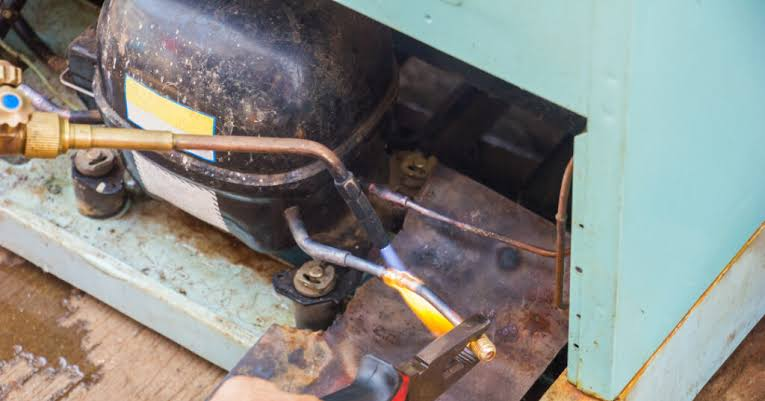
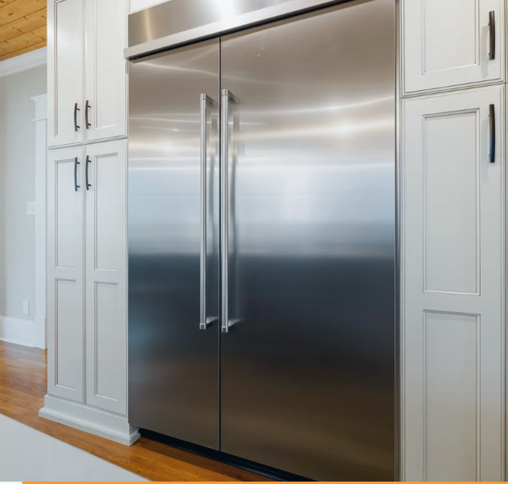
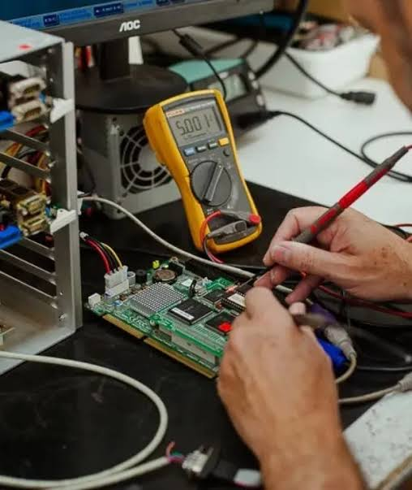
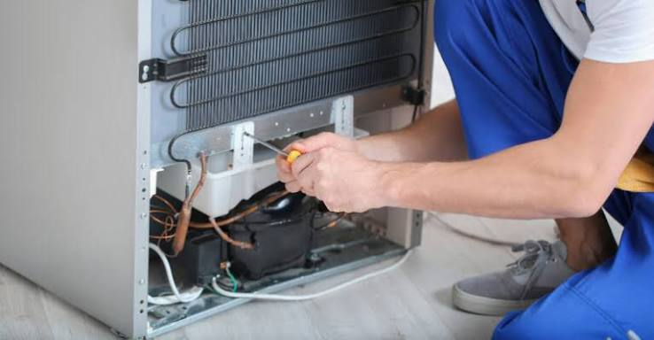
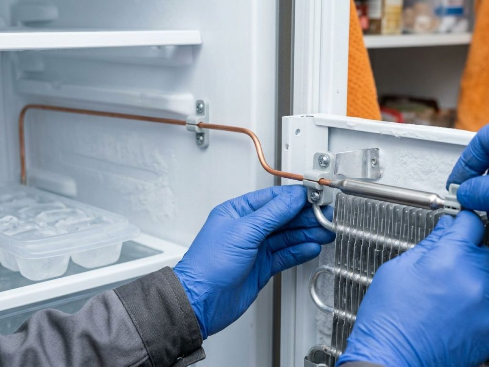
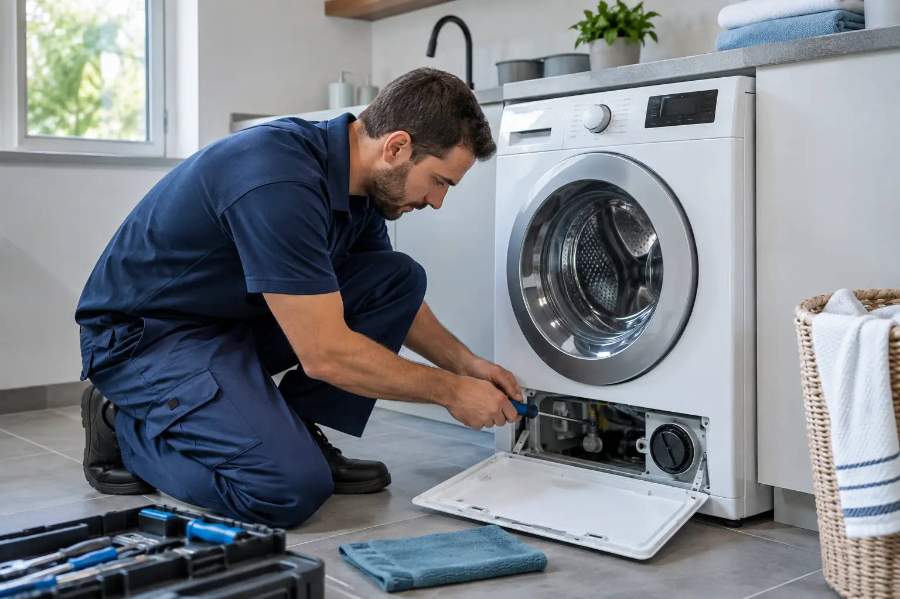

Motor e compressor
Análise de falhas de partida, ruídos e perda de capacidade de refrigeração.
Saiba mais →Está com problemas na sua geladeira, freezer, gelágua ou máquina de lavar?
Fale com a Pussa Refrigeração e solicite seu atendimento.
Quando você procura por conserto de geladeira perto de você, a Pussa oferece avaliação técnica, explicação clara do defeito e orçamento antes do reparo.

Análise de falhas de partida, ruídos e perda de capacidade de refrigeração.
Saiba mais →
Diagnóstico quando o aparelho não gela corretamente ou oscila a temperatura.
Saiba mais →

Inspeção do sistema para localizar a origem de perda de fluido ou água.
Saiba mais →
Avaliação de temperatura desregulada, congelamento excessivo e falhas de controle.
Saiba mais →
Manutenção para casos de água acumulada, obstrução ou circulação inadequada.
Saiba mais →Atendemos residências em Recife e região com diagnóstico para diferentes modelos de refrigeração e lavagem.
Manutenção e diagnóstico para equipamentos compactos usados em mercados, padarias, lanchonetes, conveniências e pequenos comércios.
Geladeiras de uma ou duas portas com frente de vidro para exposição refrigerada de bebidas e laticínios.
Cervejeiras e refrigeradores configurados para trabalhar em temperaturas mais baixas.
Equipamentos compactos para conservação de sorvetes, gelos e produtos congelados.
Balcões secos e refrigerados para padarias, frios, doces e carnes em operações de menor porte.
Envie a marca, o modelo e uma foto do equipamento pelo WhatsApp para confirmar o atendimento. Consultar equipamento comercial →
Explique o problema e receba orientação para o próximo passo.
Organização para reduzir o tempo sem seu eletrodoméstico.
Explicação do defeito antes de qualquer decisão.
Peças indicadas somente quando o diagnóstico exige.
Responsabilidade e suporte após a conclusão do serviço.
Você conhece o serviço e o valor antes de aprovar.
Informe a marca e o modelo pelo WhatsApp para confirmar a disponibilidade do serviço.
Geladeira que não gela, faz barulho ou apresenta vazamento precisa de uma avaliação correta antes da troca de peças.
Problemas podem surgir por falhas elétricas, vazamentos, sensores ou componentes desgastados. Uma avaliação ajuda a evitar danos maiores.
Perda de refrigeração, ruídos diferentes, vazamentos, excesso de gelo ou falhas no painel indicam que o aparelho deve ser avaliado.
O valor depende do modelo e do defeito identificado. A visita técnica com diagnóstico custa R$ 50 e esse valor é abatido quando o reparo é aprovado.
Sim. A Pussa realiza atendimento residencial em Recife e áreas próximas, conforme disponibilidade.
O prazo varia conforme o diagnóstico, a complexidade e a disponibilidade de componentes. A previsão é informada antes do serviço.
Geladeiras, freezers, geláguas e máquinas de lavar. Envie a marca e o modelo para confirmar o atendimento.
Consulte a disponibilidade para seu bairro pelo WhatsApp.
Fale diretamente com a Pussa Refrigeração para explicar o defeito e solicitar atendimento.
Solicite seu orçamento